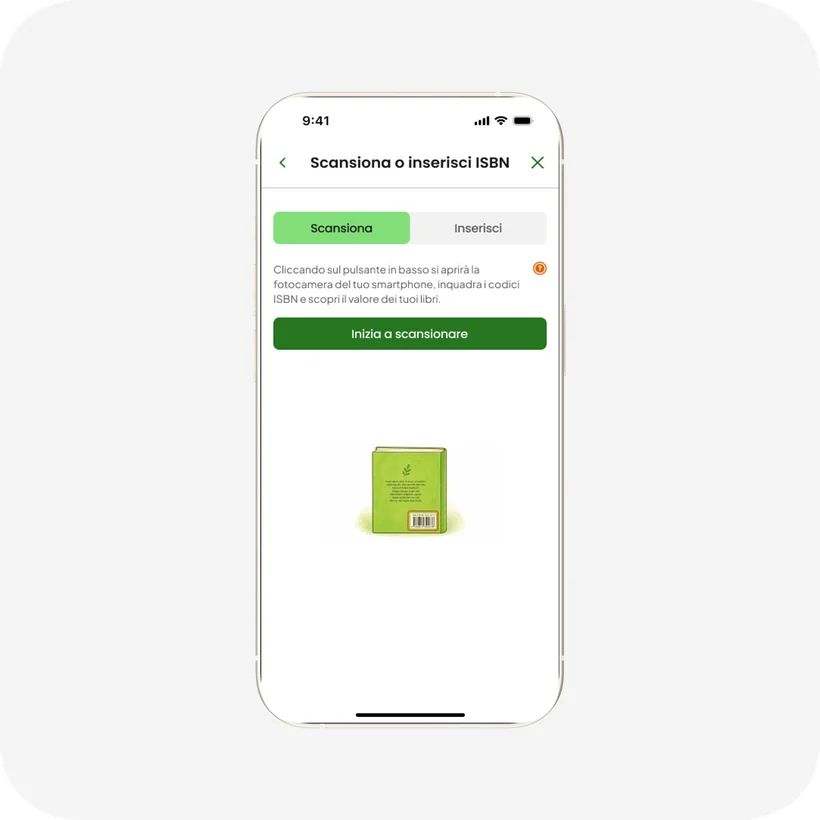
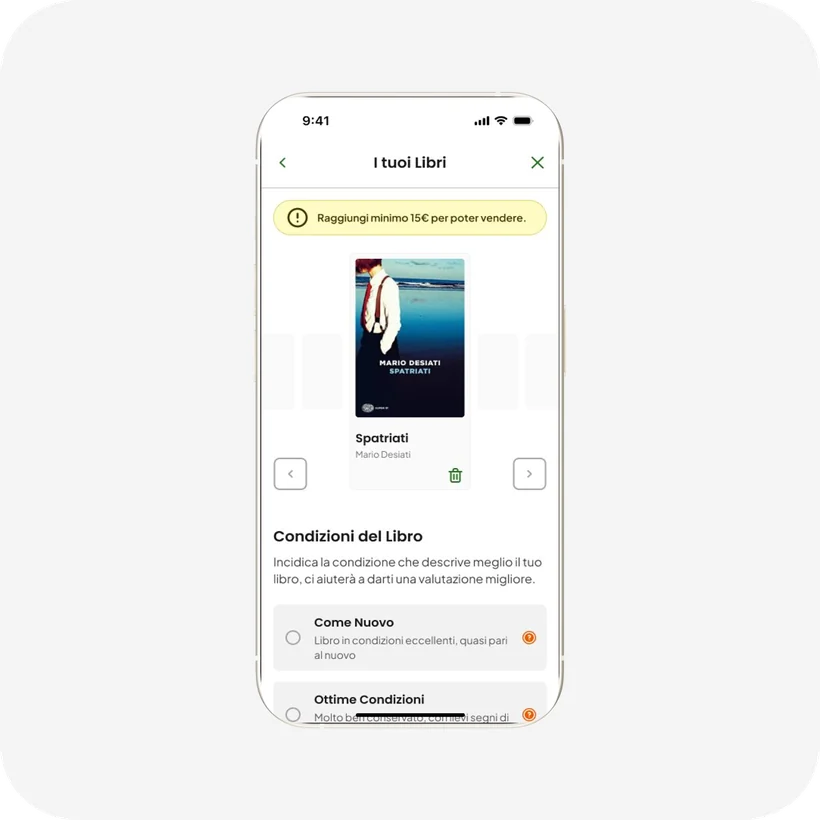
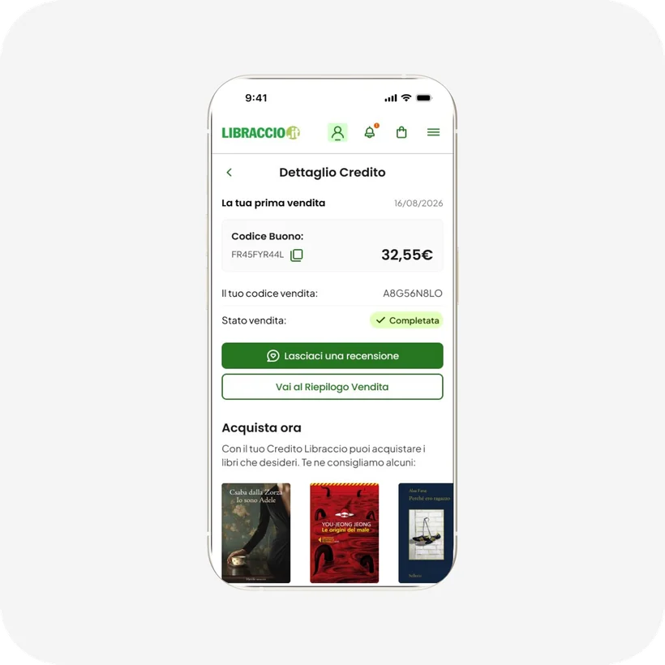
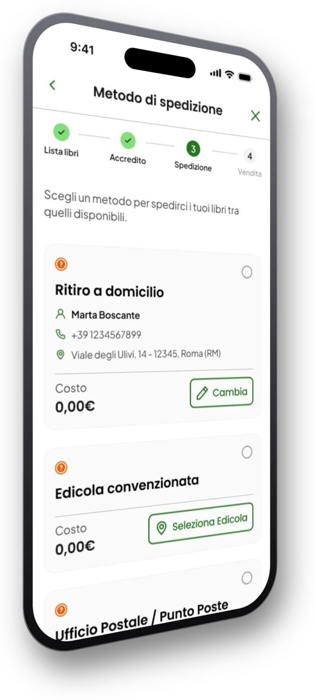
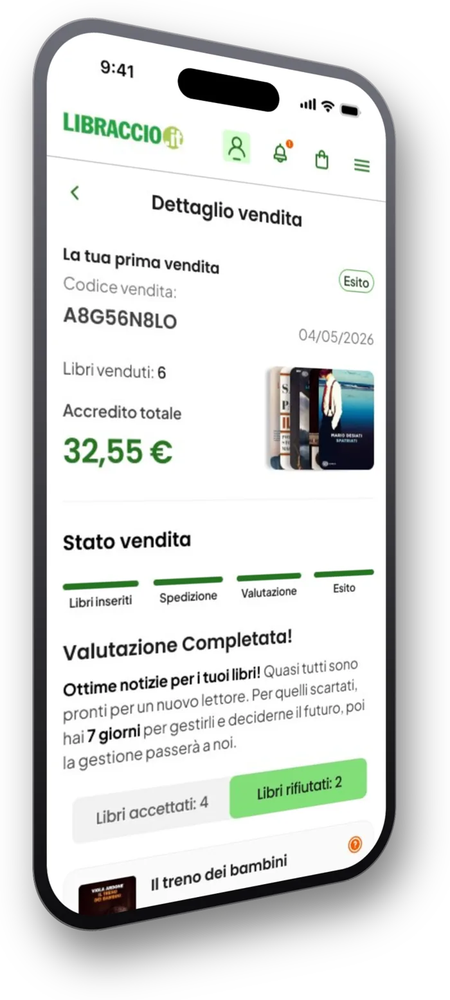
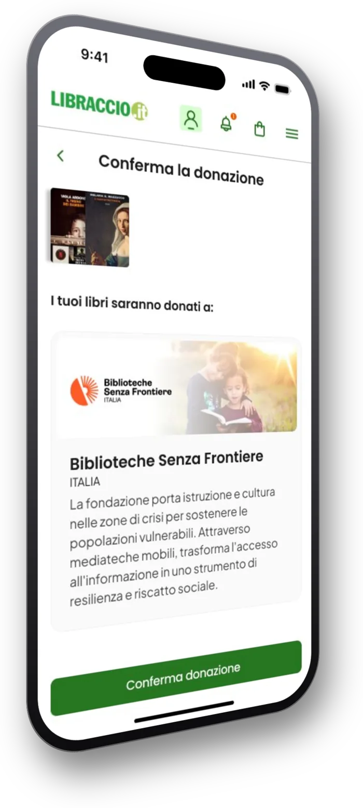

Esperienza complessa
Alto carico cognitivo, attriti tecnici (ISBN digitato a mano), punto d’ingresso invisibile, CTA senza gerarchia, vicoli ciechi nel flusso. Conseguenza: confusione prima ancora di iniziare.
Case study 01 — Project work
Project work del Master UX/UI · Team di 5 · Il mio ruolo: ideazione delle soluzioni di caricamento e prototipazione del post-vendita.
9
Interviste in profondità
161
Risposte al questionario
6
Pain point da expert review
11
Insight di ricerca
Libraccio.it permette ai privati di vendere libri usati (modello C2B), ma il servizio è poco conosciuto e poco amato: il 31% degli intervistati non sapeva nemmeno che esistesse.
Il brief chiedeva di riprogettare il flusso per renderlo più usabile. Leggendo le recensioni su Trustpilot abbiamo trovato il dettaglio che ha spostato la diagnosi: i libri giudicati non idonei non venivano restituiti, e l’utente restava senza spiegazioni, in un buco nero. Una cosa che il servizio dichiara, ma sepolta nel flusso dove nessuno la legge.
Da lì abbiamo riletto tutta la ricerca sotto un’altra lente: il problema non era l’usabilità, era la fiducia. Non è un dato che emerge da solo dai numeri — è un’interpretazione, ed è la decisione che ha dato forma a tutto il resto del progetto.
Alto carico cognitivo, attriti tecnici (ISBN digitato a mano), punto d’ingresso invisibile, CTA senza gerarchia, vicoli ciechi nel flusso. Conseguenza: confusione prima ancora di iniziare.
Valutazione percepita come «scatola nera», rifiuti senza spiegazione, libri rifiutati non restituiti, credito poco valorizzato. Conseguenza: sfiducia nel brand.
La prova: gli utenti sceglievano Vinted pur dovendo fare più lavoro, perché si fidavano di più. La frizione non era il problema — era amplificata dalla sfiducia.
Recensioni, report statistici, analisi dei competitor: piattaforme C2B a confronto con il modello C2C di Vinted, riferimento mentale degli utenti.
Analisi euristica del flusso di vendita esistente: 6 pain point principali documentati, dall’ingresso invisibile ai vicoli ciechi senza via d’uscita.
9 interviste in profondità (20–30 minuti, online) su bisogni, motivazioni e pain point di chi vende libri usati.
161 risposte: il 64,4% preferisce vendere da smartphone; i driver principali sono il decluttering e il budget per nuovi libri, non il guadagno.
5 degli 11 insight emersi dalla ricerca: quelli che hanno guidato le decisioni di design.
Esiste un «prezzo della dignità»: sotto una certa soglia l’utente preferisce tenere il libro o venderlo altrove.
Niente notifiche, niente spiegazioni: l’utente vive nell’incertezza del «rifiuto silenzioso» e si rivolge ai competitor.
Vinted è il modello mentale: ci si aspetta scansione, foto e un processo gestibile interamente da smartphone.
I libri rifiutati e non restituiti generano un senso di ingiustizia che danneggia la fiducia anche quando la vendita va a buon fine.
Il denaro non è il fine ma il «permesso morale»: un’offerta bassa viene giudicata rispetto allo sforzo e al valore emotivo ceduto.
«Se spedisco 20 libri e me ne pagate 15, voglio sapere esattamente perché gli altri 5 sono stati scartati. Non accettate il ‘perché sì’.» Marco — intervista utente
«Non sapevo nemmeno che si potesse vendere online, ho sempre pensato che l’unica opzione fosse portare i pesi in negozio.» Assunta — intervista utente
Lo studente fuorisede
«Non mi serve? Lo vendo. Subito, al prezzo migliore.»
La madre di famiglia
«Devo liberare spazio, ma non ho tempo da perdere: se funziona, lo faccio.»
La lettrice consapevole
«Non vendo per liberarmene, ma per dargli una seconda vita.»
Il designer curioso
«Se non mi rappresenta più, lo rivendo: deve stare al passo con i miei interessi.»
Due livelli: nuove funzionalità e chiarezza d’uso. Ogni decisione nasce da un insight.
Elimina l’inserimento manuale del codice a 13 cifre, principale attrito tecnico del flusso attuale.
← risponde a: expert review, insight mobile-first

L’utente indica lo stato del libro in fase di inserimento: la valutazione è chiara fin dall’inizio, non una sorpresa a spedizione avvenuta.
← risponde a: insight «scatola nera»

Lista libri → valutazione → spedizione → esito: l’utente sa sempre a che punto è e cosa deve fare dopo.
← risponde a: insight «rifiuto silenzioso», ansia logistica
Per i libri non accettati l’utente sceglie cosa farne: donarli, riciclarli, o riceverli indietro pagando la spedizione. Riprende il controllo — sparisce la sensazione di «sequestro» — e Libraccio non si fa carico della spedizione di ritorno automatica. La gerarchia delle opzioni nasce dall’equilibrio tra bisogno dell’utente e sostenibilità per il business, non dall’ottimizzare un lato solo.
Il mio contributo qui è stato porre due vincoli di realtà: non tutti i libri si possono donare (se un libro è illeggibile, l’opzione non ha senso), e l’identificazione delle condizioni deve restare semplice anche per chi valuta i libri dal lato operativo — una parte ragionata ma non prototipata, per limiti di tempo.
← risponde a: insight sul mancato reso
La soluzione più apprezzata del progetto.
Il buono passa da vincolo percepito a incentivo reale, valorizzato nel momento giusto del flusso.
← risponde a: insight sul buono acquisto

Costi, soglie e commissioni compaiono al momento giusto del flusso, non nascosti in pagine secondarie che nessuno visita.

A fine processo l’utente vede l’esito dettagliato, libro per libro, con il valore riconosciuto a ciascuno: la «scatola nera» diventa un conto chiaro, senza sorprese.

Micro-feedback lungo il flusso che costruiscono il legame con l’utente invece di accumulare ansia verso l’esito finale.

Il progetto si è concluso con la presentazione finale al committente e un prototipo Figma del nuovo flusso di vendita. Il riscontro più forte è arrivato sulla gestione dei libri rifiutati, la soluzione più apprezzata.
Non essendo stato implementato, non ci sono metriche di prodotto: il valore del progetto sta nella solidità del processo e nella tracciabilità ricerca → decisione.